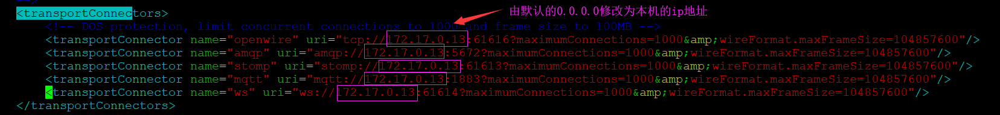
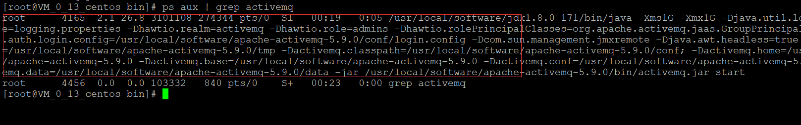

安装activemq前须知
需要确保系统中已经安装了JDK
ActiveMQ5.10.x以上版本必须使用JDK1.8才能正常使用
ActiveMQ5.9.x及以下版本使用JDK1.7即可正常使用
第一步：上传activemq压缩包到服务器并解压
$ tar -zxvf apache-activemq-5.9.0-bin.tar.gz -C /usr/local/software
第二步：启动activemq
$ /usr/local/software/apache-activemq-5.9.0/bin/activemq start
第三步：修改activemq根目录下的conf/activemq.xml文件
$ vim /usr/local/software/apache-activemq-5.9.0/conf/activemq.xml
修改transportConnectors节点下的内容：

第四步：启动
$ cd /usr/local/software/apache-activemq-5.9.0/bin
$ ./activemq start
第五步：用jps查看是否有activemq在jvm中运行
$ jps
第六步：检查进程
$ ps aux | grep activemq
